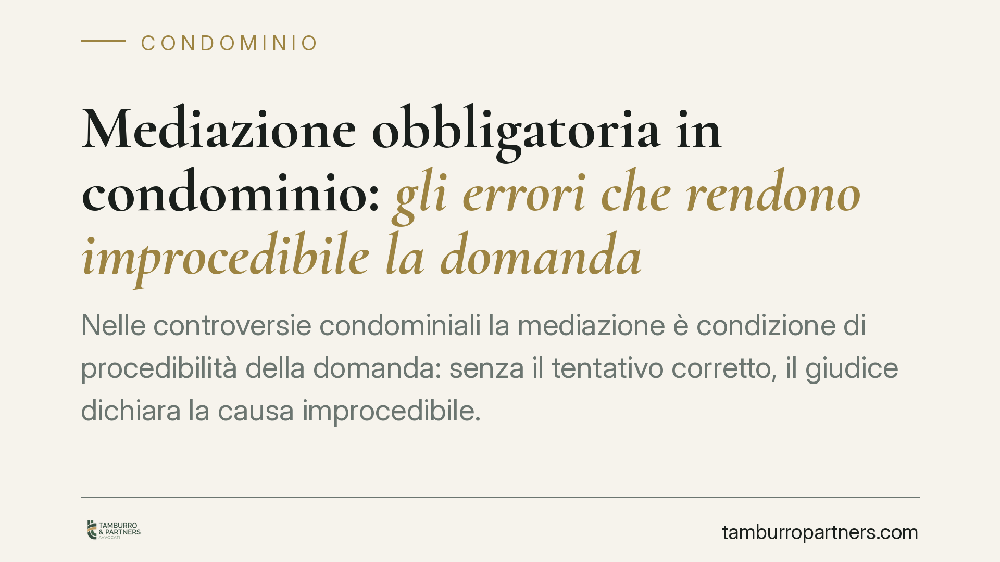

Mediazione obbligatoria in condominio: gli errori che rendono improcedibile la domanda
Nelle controversie condominiali la mediazione è condizione di procedibilità della domanda: senza il tentativo corretto, il giudice dichiara la causa improcedibile. Oggetto non coincidente con la citazione, invito al soggetto sbagliato e gestione dei termini di decadenza sono gli errori più frequenti. Un errore procedurale può precludere la tutela nel merito. Vediamo come evitarlo.

Il contesto
La mediazione obbligatoria non è una formalità. Nelle materie previste dalla legge è condizione di procedibilità: se il tentativo manca o è viziato, la domanda giudiziale viene dichiarata improcedibile. Nel contenzioso condominiale questo si intreccia con i brevi termini di decadenza per l'impugnazione delle delibere, con un rischio concreto: perdere la possibilità stessa di far valere le proprie ragioni.
Il problema non riguarda il merito della lite, ma il modo in cui la si introduce. Ed è su questo piano che molte cause si chiudono prima ancora di entrare nel vivo.
Inquadramento normativo
L'obbligo di esperire la mediazione prima della causa è disciplinato dall'art. 5, comma 1, del D.lgs. 28/2010, che elenca le materie soggette alla condizione di procedibilità. Tra queste rientrano le controversie in materia di condominio e di diritti reali.
Due norme del codice civile completano il quadro condominiale. L'art. 1137 c.c. fissa in trenta giorni il termine per impugnare le delibere assembleari: è un termine di decadenza, cioè un termine perentorio il cui mancato rispetto estingue il diritto di agire. L'art. 1131 c.c. individua nell'amministratore il soggetto che rappresenta il condominio: è a lui che vanno rivolti gli atti relativi alla gestione comune.
Sul fronte dell'usucapione — l'acquisto della proprietà per il possesso prolungato nel tempo — occorre una precisazione. L'obbligatorietà del tentativo di mediazione non discende dalla trascrizione dell'accordo, ma dalla riconducibilità della materia ai diritti reali ai sensi dell'art. 5, comma 1, D.lgs. 28/2010, come chiarito dalle Sezioni Unite della Cassazione con la sentenza n. 19596/2020. L'art. 2643, n. 12-bis, c.c. ha una funzione diversa: rende trascrivibile l'accordo di mediazione che accerta l'usucapione, rendendolo opponibile ai terzi. È una norma sugli effetti dell'accordo, non sulla necessità del tentativo.
Gli errori più frequenti
Oggetto della mediazione diverso da quello della citazione. La materia dedotta in mediazione deve coincidere con quella poi portata in giudizio. Se in mediazione si discute di un profilo e in causa se ne introduce un altro, il tentativo si considera non esperito per quella domanda. L'ampiezza dell'istanza iniziale, dunque, va calibrata sul petitum che si intende azionare.
Invito rivolto al soggetto sbagliato. Nelle liti che coinvolgono il condominio, l'istanza di mediazione va indirizzata all'amministratore, legittimato a rappresentare l'ente ai sensi dell'art. 1131 c.c., e non ai singoli condomini. L'errore sulla legittimazione passiva compromette la validità del tentativo.
Mancata gestione del rapporto tra mediazione e decadenza. Il termine di trenta giorni dell'art. 1137 c.c. non si ferma da solo. È qui che molti commettono l'errore più costoso.
Implicazioni pratiche: decadenza e improcedibilità
Il punto delicato è il coordinamento tra il termine di impugnazione della delibera e l'obbligo di mediazione. L'art. 5, comma 6, del D.lgs. 28/2010 stabilisce che la comunicazione della domanda di mediazione produce, sulla prescrizione, gli effetti della domanda giudiziale e impedisce la decadenza per una sola volta. In pratica: depositare tempestivamente l'istanza di mediazione preserva il rispetto del termine dell'art. 1137 c.c.
Attenzione però: l'effetto impeditivo opera una sola volta. Se la mediazione fallisce e la decadenza non viene poi coltivata correttamente con la domanda giudiziale nei termini, la tutela si perde. Il risultato è un paradosso: si ha ragione nel merito, ma la delibera illegittima diventa inattaccabile.
Per il condomino che intende impugnare una delibera, questo significa che la tempestività dell'istanza di mediazione è tanto importante quanto la sua correttezza. Per l'amministratore, significa gestire con rigore la ricezione degli inviti e la posizione del condominio nel procedimento.
Cosa fare in concreto
- Definisci l'oggetto con precisione: redigi l'istanza di mediazione in modo che la materia coincida con quella che porterai in citazione, evitando discrasie tra tentativo e domanda.
- Individua il legittimato corretto: nelle liti condominiali rivolgi l'invito all'amministratore ex art. 1131 c.c., non ai singoli condomini.
- Calcola i termini a ritroso: deposita l'istanza di mediazione entro i trenta giorni dell'art. 1137 c.c. per attivare l'effetto impeditivo della decadenza previsto dall'art. 5, comma 6, D.lgs. 28/2010.
- Non confidare nell'effetto una tantum: dopo l'esito negativo della mediazione, coltiva senza ritardi la domanda giudiziale, perché l'impedimento della decadenza opera una sola volta.
- Conserva la documentazione: verbali, comunicazioni e prove della partecipazione sono decisivi se l'improcedibilità viene eccepita.
Ogni condominio ha una storia a sé.
Se gestisci un'amministrazione e vuoi un confronto su una specifica questione condominiale, scrivi allo studio. Ti rispondiamo entro un giorno lavorativo.